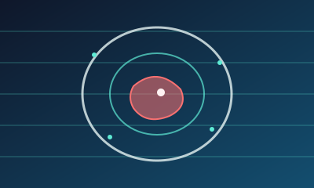

IA detecta cáncer de páncreas hasta 3 años antes del diagnóstico
El modelo REDMOD, de Mayo Clinic, analizó cerca de 2 000 tomografías originalmente leídas como normales y detectó el 73 % de los cánceres prediagnósticos, casi el doble que los especialistas.
Leer más (enlace externo)